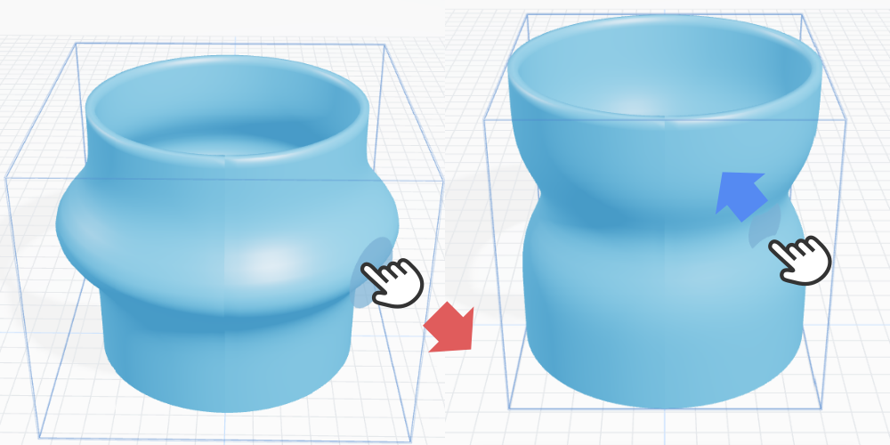
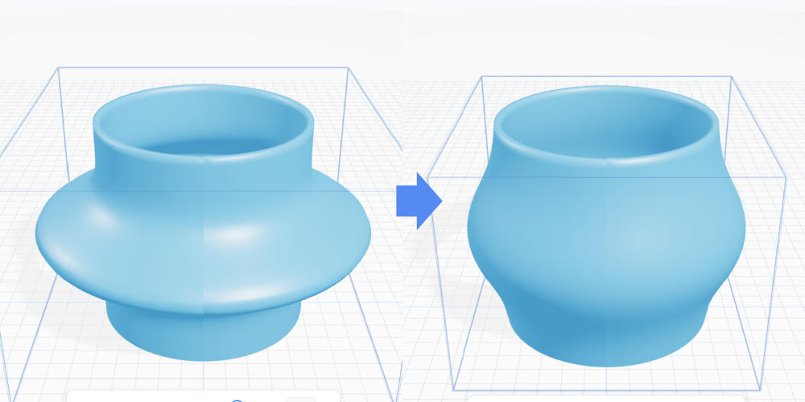
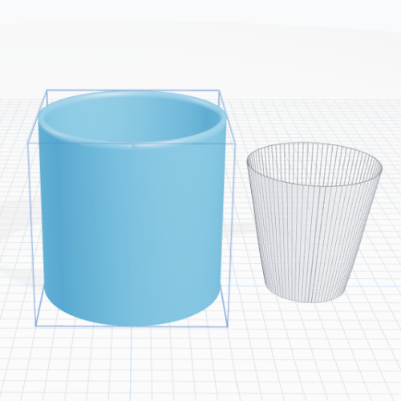

STEP 1
조각으로 형태 만들기

도자기 표면을 밀거나 당겨 원하는 형태를 만듭니다.
STEP 2
다듬기

다듬기 버튼을 누르면
조각한 면이 부드럽게 정리됩니다.
STEP 3
크기 확인

크기확인 버튼을 누르면
종이컵 크기의 컵이 함께 표시되어
실제 크기를 비교할 수 있습니다.
STEP 5
캡처
캡처는 PC 웹에서만 사용할 수 있습니다.
모바일에서는 제공되지 않습니다.
STEP 6
문의하기
형태와 크기가 마음에 들면
문의하기 버튼을 눌러
도안 이미지와 치수를 보내세요.
상단 사용 방법 버튼으로
이 안내를 다시 볼 수 있습니다.